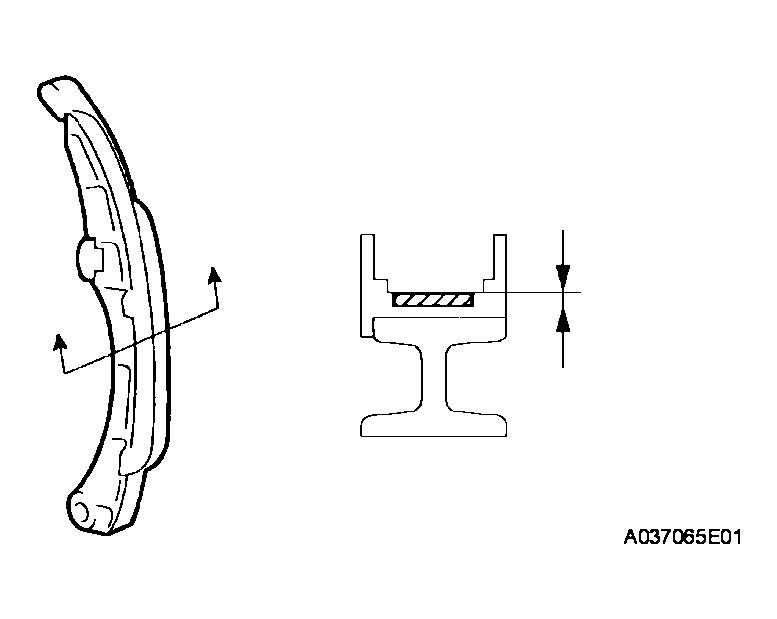

Timing Chain: Inspection
- INSPECT CHAIN
- Using a spring scale, pull the timing chain with a force of 140 N (14.3 kgf, 31.5 lbf) and measure the length of it.
Maximum chain elongation: 123.2 mm (4.850 in.)
If the elongation is greater than the maximum, replace the chain.
HINT:
Perform the same measurements by pulling at 3 or more random places to obtain the average length.
- Using a spring scale, pull the timing chain with a force of 140 N (14.3 kgf, 31.5 lbf) and measure the length of it.
- INSPECT NO. 1 CHAIN TENSIONER
- Check that the plunger moves smoothly when the ratchet pawl is raised with your finger.
- Release the ratchet pawl and check that the plunger is locked in place by the ratchet pawl and does not move when pushed with your finger.
- INSPECT CHAIN TENSIONER SLIPPER
- Measure the chain tensioner slipper wear.

Courtesy of © TOYOTA, LICENSE AGREEMENT TMS1002Maximum wear: 1.0 mm (0.039 in.)
If the wear is greater than the maximum, replace the slipper.
- Measure the chain tensioner slipper wear.
- INSPECT NO. 1 CHAIN VIBRATION DAMPER
- Measure the vibration damper wear.
Maximum wear: 1.0 mm (0.039 in.)
If the wear is greater than the maximum, replace the damper.
- Measure the vibration damper wear.